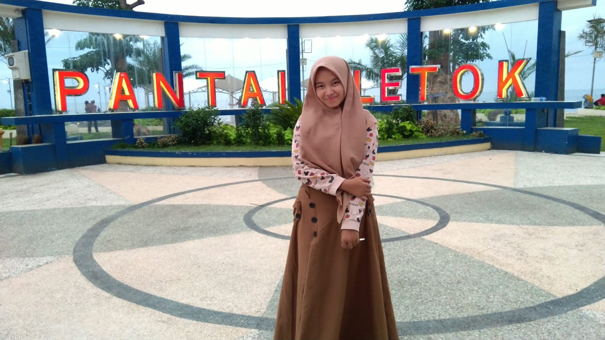
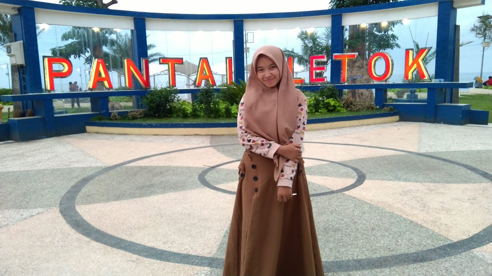
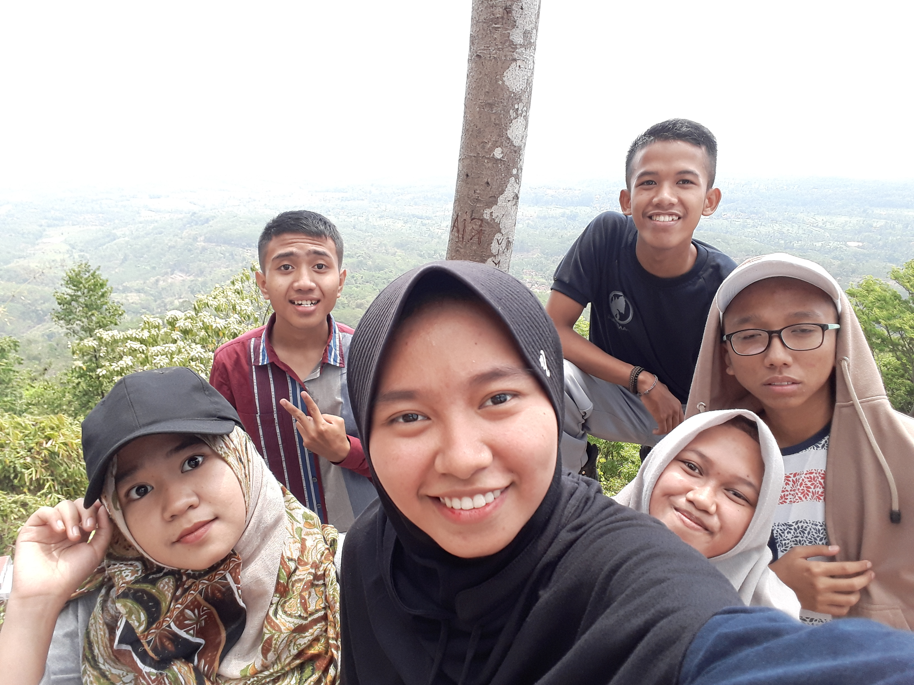
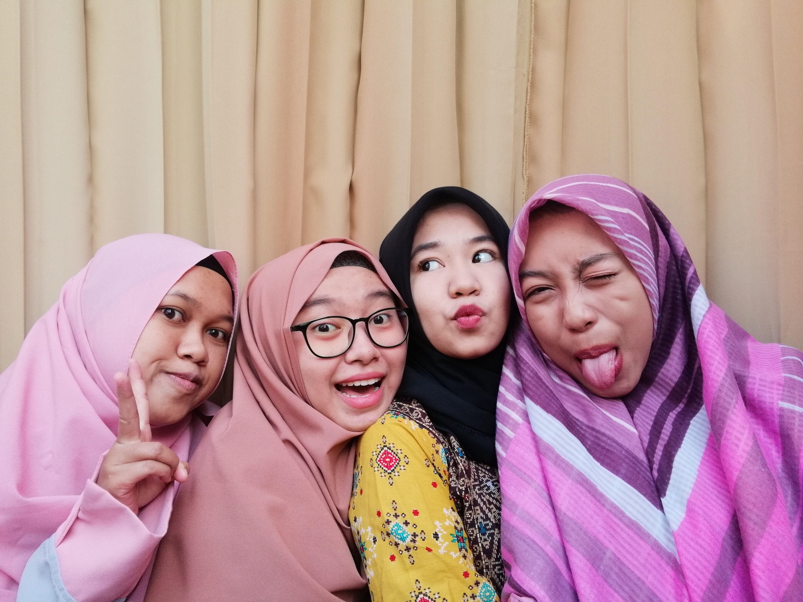
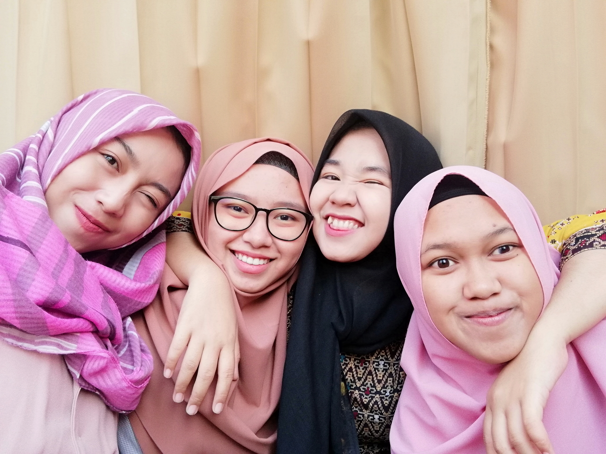
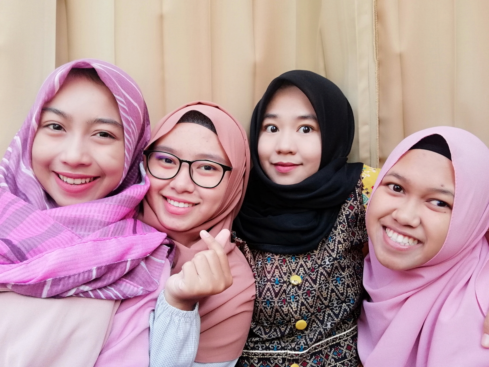
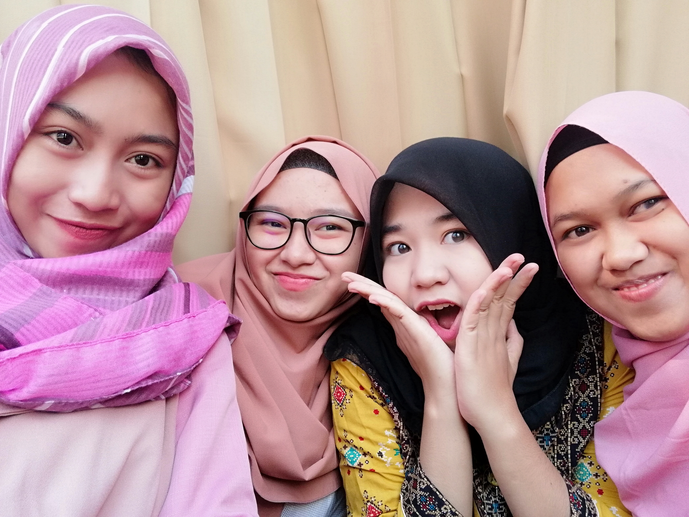
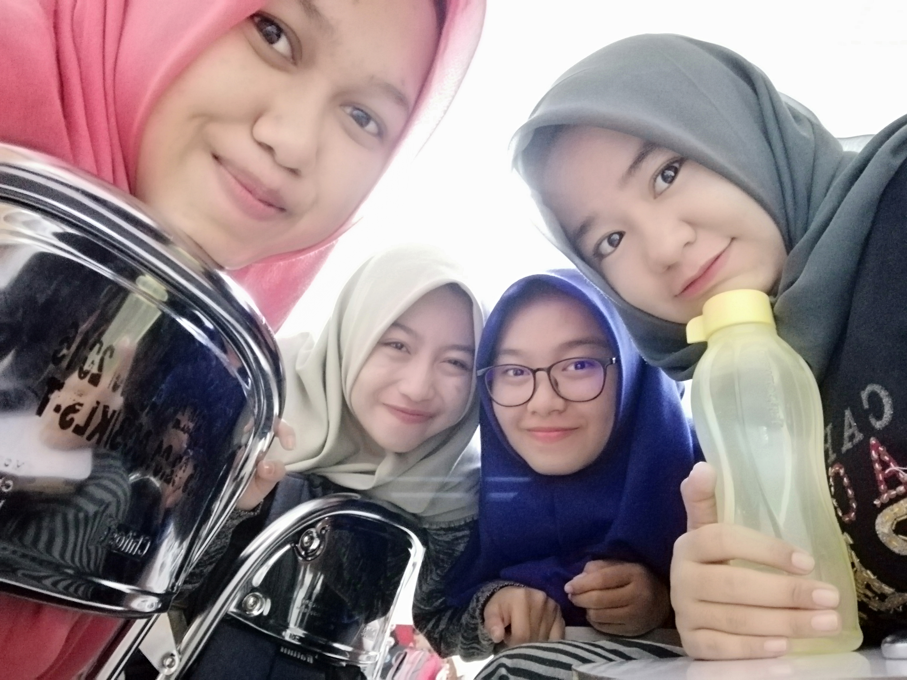

|  |
|
Social Media |
|  |
|
Social Media |
Di website ini saya akan memperkenalkan diri saya, Selamat Membaca.
Perkenalkan nama saya Shinta Mauliantika,
Kalian bisa memanggil saya Shinta.
Saya seorang mahasiswi dari Politeknik yang ada di Kota Jember, yaitu Politeknik Negeri Jember dengan Program Studi Teknik Informatika
Jurusan Teknologi Informasi. Saat ini saya berada di semester 3. Selamat Belajar ^^
Saya lahir di Kota Situbondo, 21 Juni 2000 dan saat ini Umur saya 19 Tahun, Saya berasal dari Kota Situbondo.
Alamat lengkap rumah saya di Desa Buduan Utara RT 003/ RW 006 Kec. Suboh Kab.Situbondo. Jika Kalian ingin mampir kerumah saya monggo hehe.
Disemester 3 ini saya belajar salah satu mata Kuliah tentang SI(Sistem Informasi) Berbasis Web.
Di matkul (mata kuliah) ini pembelajaran awal tentang pembuatan website dengan HTML. Website yang saya buat
ini adalah salah satu tugas dari dosen pengampu matkul ini. Dengan adanya tugas ini saya sangat besyukur karena
bisa belajar banyak tentang HTML. Saya belajar tentang HTML bukan saja dari pembelajaran yang dosen sampaikan kepada saya.
Namun, dosen saya memberi link untuk belajar HTML lebih banyak dari yang beliau sampaikan di kelas. Jika kalian ingin
belajar tentang HTML kalian bisa klik link di bawah ini. Kalian bukan hanya bisa belajar tentang HTML saja, namun juga bisa
belajar tentang website lainnya seperti CSS, PHP dan lain-lain. Diwebsite ini sangat lengkap.
Karena saya kuliah di Jember, otomatis saya ngekost disana. alamat kost saya di Cluster Tidar Asri Jalan Tidar Blok C1 Sumbersari, Jember. Kalian bisa mampir jika sedang berada dijember^^. Di jember saya bertemu dengan banyak teman baru khususnya di kelas saya sendiri. Saya sangat dekat dengan ciska, yuni, rubi. Setiap hari kami selalu bersama entah saat ada kelas maupun tidak ada kelas. Banyak foto yang kami abadikan. Saya sangat bersyukur mendapat banyak teman yang care terhadap saya terutama saya anak rantauan meski tidak jauh, tetap saja tidak 1 rumah dengan orang tua. Bahkan jika ada tugas kami bekerja sama dalam menyelesaikan agar lebih cepat dan mendapat referensi dalam mengerjakan. Dengan banyak teman sangat Bahagia^^. Kami berharap dapat wisuda dengan tepat waktu^^.
Pribadi saya sangat suka makan, bahkan untuk menahan lapar sangat sulit. Jika ada kuliah padat saya membawa makanan atau membeli cemilan di luar kampus agar lapar saya bisa tertahan. Bahkan pernah membawa bekal yang saya masak sendiri agak lebih hemat. Jika tidak ada tugas saya sangat suka nonton drakor(drama korea) di kos. Biasanya saya streaming di salah satu web. Di web itu sangat lengkap untuk streaming drakor tentunya sudah ber subtitle ya kawan^^. jika kalian suka drakor dan ingin streaming bisa klik tombol di kanan ini kalian bisa search drakor yang ingin di tonton ->
BONUS^^ Dibawah ini beberapa foto kami(yuni, ciska, rubi dan saya), kami sengaja mengabadikan agar nanti dapat menjadi cerita ketika kami wisuda nanti. Juga Foto kebersamaan kelas saya (Teknik Informatika'18 Golongan B).
|  |  |
 |
 |
|  |  |  |  |
^^TERIMAKASIH SUDAH MENYEMPATKAN UNTUK MEMBACA WEBSITE SAYA
WASSALAMUALAIKUM
WARAHMATULLAHI WABARAKATUH^^
 shintamauliantika59@gmail.com
shintamauliantika59@gmail.com Shinta Mauliantika
Shinta Mauliantika shintamauliantika_
shintamauliantika_